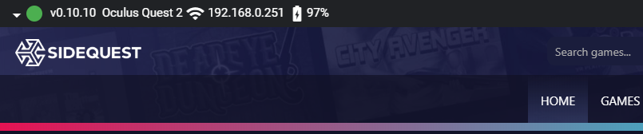
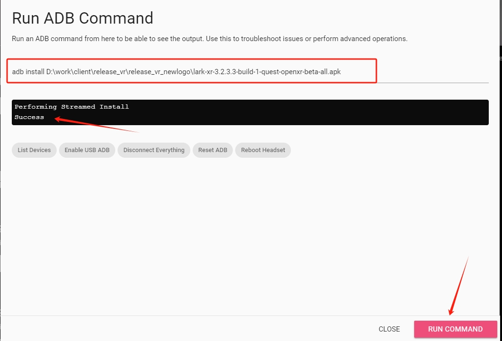
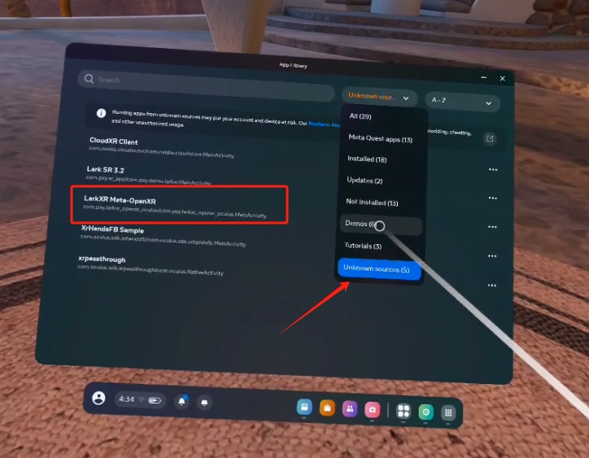
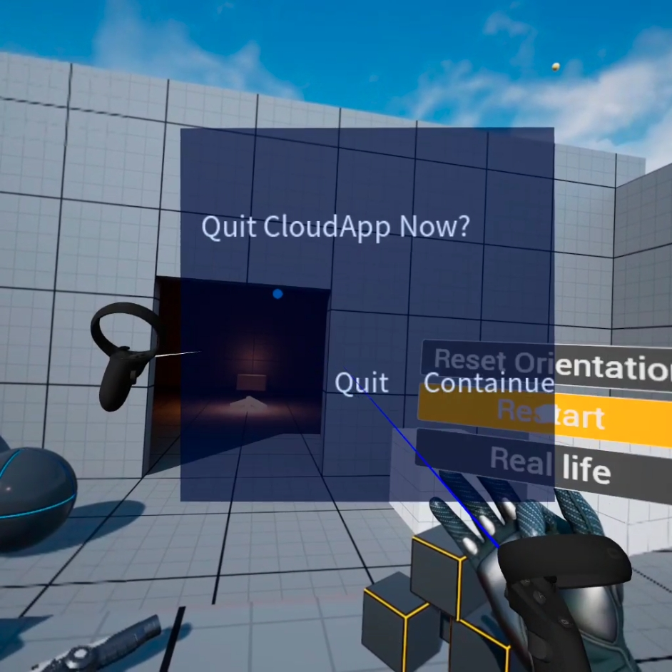
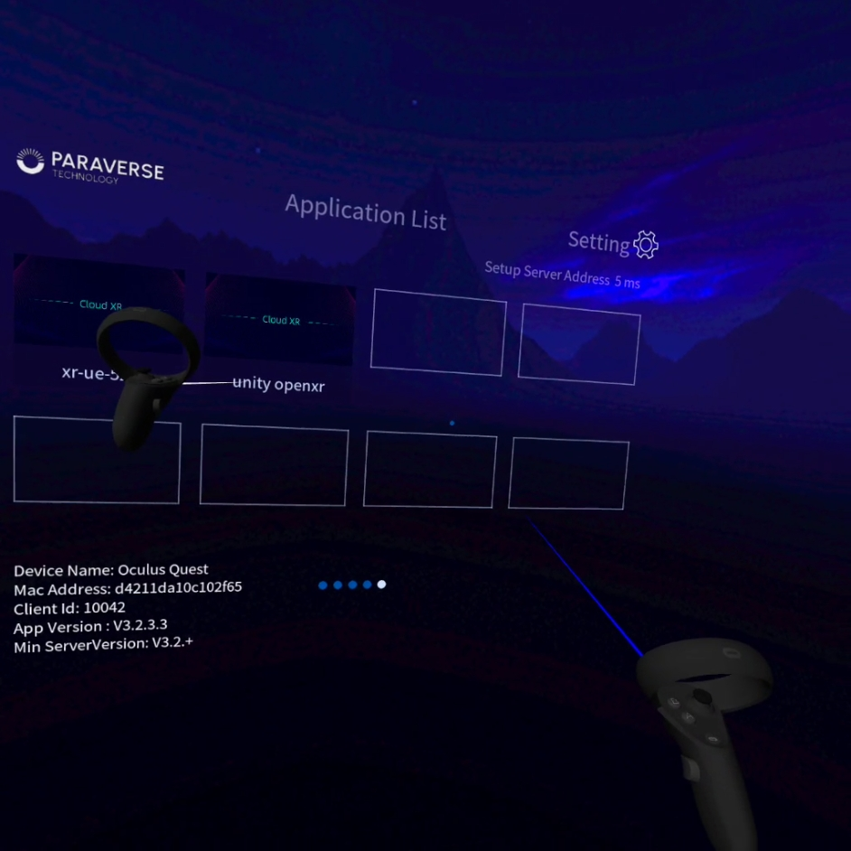

Get started with LarkXR Quest Client
Install app with SideQuest
Download and install SideQuest https://sidequestvr.com/setup-howto
Install LarkXR Quest client
Enable Quest Debug mode
Plugin Quest to PC

- Install
lark-xr-****-build-1-quest-openxr-beta-all.apkwith install button


- Install with adb command (option)
adb install [path to lark-xr-****-build-1-quest-openxr-beta-all.apk]


LarkXR Quest Client
- Find LarkXR Meta OpenXR Client on Unknown source in quest

- Enter LarkXR Client and setup LarkXR server ip

- Back to applist and enter selected cloud app with A button


- Press trigger and short press B/Y at same time show exit dialog

